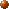

Public Members
Public Members
Program text is accessible at the meta level in the form of parse tree.
The parse tree is represented by a Ptree metaobject.
It is implemented as a nested
linked-list of lexical tokens --- the S expressions in the Lisp terminology.
For example, this piece of code:
int a = b + c * 2;
is parsed into:
[[static] [int] [[a = [b + [c * 2]]]] ;]
Here, [] denotes a linked list.
Note that operators such as = and + make sublists.
The sublists and their elements (that is, lexical tokens such as a and =) are also represented by Ptree metaobjects.
Public Members
Append(Ptree* lst1, Ptree* lst2)
Cons(Ptree* a, Ptree* b)
CopyList(Ptree* lst)
 Display()
Display()
Eq(Ptree* lst, char x)
Eq(Ptree* lst, char* x)
Eq(Ptree* lst, Ptree* x)
Equal(Ptree* x, Ptree* y)
First(Ptree* lst)
GenSym()
IsLeaf()
Last(Ptree* lst)
Length(Ptree* lst)
List(Ptree* e1, Ptree* e2, ...)
ListTail(Ptree* lst, int k)
Make(char* format, [Ptree* sublist, ...])
Match(Ptree* list, char* pattern,
[Ptree** sublist, ...])
Nth(Ptree* lst, int n)
Reify(unsigned int& value)
Reify(char*& string)
ReplaceAll(Ptree* lst, Ptree* orig, Ptree* subst)
operator <<(ostream& s, Ptree* p)
Rest(Ptree* lst)
Second(Ptree* lst)
Third(Ptree* lst)
ToString()
Write(ostream& out)
qMake(char* text)
To manipulate linked lists, the MOP provides many static member
functions on Ptree, which are familiar to Lisp programmers:
static Ptree* First(Ptree* lst)
This returns the first element of lst.
static Ptree* Rest(Ptree* lst)
This returns the rest of lst except the first element, that is, the cdr field of lst.
static Ptree* Second(Ptree* lst)
This returns the second element of lst.
static Ptree* Third(Ptree* lst)
This returns the third element of lst.
static Ptree* Nth(Ptree* lst, int n)
This returns the n-th element of lst. Nth(lst, 0) is equivalent to First(lst).
static Ptree* Last(Ptree* lst)
This returns the last cons cell, which
is a list containing only the last element of lst.
static Ptree* ListTail(Ptree* lst, int k)
This returns a sublist of lst obtained by omitting the first k elements. ListTail(lst, 1) is equivalent to Rest(lst) .
static int Length(Ptree* lst)
This returns the number of the elements of lst.
If lst is not a list, then this returns a negative number.
static Ptree* Cons(Ptree* a, Ptree* b)
This returns a cons cell whose car field is a and whose cdr is b.
static Ptree* List(Ptree* e1, Ptree* e2, ...)
This returns a list whose elements are e1, e2, ... List() returns
a null list nil.
static Ptree* Append(Ptree* lst1, Ptree* lst2)
This concatenates lst1 and lst2. It returns the resulting list.
static Ptree* CopyList(Ptree* lst)
This returns a new list whose elements
are the same as lst 's.
static Ptree* ReplaceAll(Ptree* lst, Ptree* orig, Ptree* subst)
This returns
a list in which all occurrences of orig in lst are
replaced with subst. This is not a destructive operation.
static bool Eq(Ptree* lst, char x) static bool Eq(Ptree* lst, char* x) static bool Eq(Ptree* lst, Ptree* x)
This returns true if lst and x are equal. If x is Ptree*, this
determines the equivalence by comparing the pointers.
static bool Equal(Ptree* x, Ptree* y)
This recursively compares x and y and
returns true if they are equivalent.
Furthermore, the following member functions are
available on Ptree metaobjects:
This returns true if the metaobject indicates
a lexical token.
This prints the metaobject on the console for
debugging. Sublists are surrounded by [ and ].
This converts the parse tree into a character string and returns it.
This writes the metaobject to the file
specified by out. Unlike Display() ,
sublists are not surrounded by [ and ]. This member
function returns the number of written lines.
The operator << can be used to write a Ptree object
to an output stream. It is equivalent to Write() in terms of the result.
The parse tree is basically a long list of the lexical tokens
that appear in the program
although some of them are grouped into sublists.
The order of the elements of that list is the same as the order
in which the lexical tokens appear.
But if some fields such as
the type field are omitted in the program,
then nil is inserted at those places.
For example, if the return type of a function declaration
is omitted as follows:
main(int argc, char** argv){ }
then nil list is inserted at the head of the list:
[nil nil [main ( [[[int] [argc]] , [[char] [* * argv]]] )] [{
nil
}]
Since the function body is also omitted, nil list is inserted between { and }.
Construction
Programmers can make Ptree metaobjects. Because the MOP
provides a conservative garbage collector, they don't need to care about
deallocation of the metaobjects.
The next static member functions on Ptree are used to
make a Ptree metaobjects.
static Ptree* Make(char* format, [Ptree* sublist, ...])
This makes a Ptree metaobject according to the format. The format is a null-terminated
string. All occurrences of %c (character), %d (integer), %s (character string), and %p (Ptree) in the format are replaced with the values following the format. %% in the format is replaced with %.
static Ptree* GenSym()
This generates a unique symbol name (aka identifier) and returns it. The returned symbol name is used as the name of a temporary variable, for example.
The Ptree metaobject returned by Make() is not a real
parse tree.(At least, for the time being.)It is just a
unparsed chunk of characters. Although programmers can use Ptree metaobjects generated by Make() as they use
other Ptree metaobjects, the structure of those metaobjects
does not reflect the code they represent.
Using Make(), programmers can easily generate any piece
of code to substitute for part of the original source code.
For example, suppose array_name is xpos and offset is 3. The following function call:
Ptree::Make("%p[%d]", array_name, offset)
makes a Ptree metaobject that represents:
xpos[3]
%p simply expand a given Ptree metaobject
as a character string. Thus programmers may write something like:
Ptree::Make("char* GetName(){ return \"%p\"; }",
array_name);
Note that a double quote " must be escaped by a backslash \ in a C++ string. \"%p\" makes a string literal.
The function call above generates the code below:
char* GetName(){ return "xpos"; }
Although Make() follows the old printf() style, programmers can also use a more convenient style
similar to Lisp's backquote notation. For example,
Ptree::Make("%p[%d]", array_name, offset)
The expression above can be rewritten using qMake() as follows:
Ptree::qMake("`array_name`[`offset`]")
Note that the ``backqouted'' C++ expressions array_name and offset are directly embedded in the C++ string. Their
occurrence are replaced with the value of the expression. This
replacement cannot be implemented in regular C++. It is implemented
by the metaclass for Ptree.
static Ptree* qMake(char* text)
This makes a Ptree metaobject that represents the text.
Any C++ expression surrounded by backquotes ` can appear in text. Its occurrence is replaced with the value denoted by
the expression. The type of the expression must be Ptree*, int, or char*.
Except the difference in the notation, qMake() is equivalent to Make(). Programmers can choose
either one they prefer at any place.
Pattern Matching
The MOP provides a static member function
on Ptree metaobjects for pattern matching.
static BOOL Match(Ptree* list, char* pattern,
[Ptree** sublist, ...])
This compares the pattern and list.
If they match, this function returns true and binds the sublists
to appropriate sublists of the list, as specified by the pattern. Note that the type of sublist is pointer to Ptree*.
For example, the function Match() is used as follows:
if(Ptree::Match(expr, "[%? + %?]", &lexpr, &rexpr))
cout << "this is an addition.";
else if(Ptree::Match(expr, "[%? - %?]", &lexpr, &rexpr))
cout << "this is a subtraction.";
else
cout << "unknown";
The pattern [%? + %?] matches a linked list that
consists of three elements if the second one is +.
If an expression expr matches the pattern, lexpr gets bound to the first element of expr and rexpr gets bound to the third element.
The pattern is a null-terminated string. Since Match() does not understand the C++ grammar, lexical tokens appearing in
the pattern must be separated by a white space. For example,
a pattern a+b is regarded as a single token.
The pattern is constructed by these rules:
%[, %], and %% are patterns that match [, ], and %.
[] is a pattern that matches a null list (nil).
[pat1 pat2 ... ] is a pattern
that matches a list of pat1, pat2, ...
%* is a pattern that matches any token or list.
%? is a pattern that matches any token or list. The matched
token or list is bound to sublist.
%_ is a pattern that matches the rest of the list
(the cdr part).
%r is a pattern that matches the rest of the list.
The matched list is bound to sublist.
Reifying Program Text
If a Ptree metaobject represents a literal such as an integer
constant and a string literal, we can obtain the value denoted by
the literal.
static BOOL Reify(unsigned int& value)
This returns true if the metaobject represents an
integer constant. The denoted value is stored in value. Note
that the denoted value
is always a positive number because a negative number such as -4 generates two distinct tokens such as - and 4.
static BOOL Reify(char*& string)
This returns true if the metaobject represents a
string literal. A string literal is a sequence of character surrounded by
double quotes ".
The denoted null-terminated string is stored in string.
It does not include the double quotes at the
both ends. Also, the escape sequences are not expanded.
Note: the character string returned by Reify() is
allocated in the heap area. However, because the MOP provides a
conservative garbage collector, programmers do not need to deallocate
the string by themselves.
Support Classes
The MOP provides two support classes PtreeIter and PtreeArray to help programmers to deal
with Ptree objects. PtreeIter is useful to perform iteration on a list of Ptree objects.
Suppose that expr is a list:
PtreeIter next(expr);
Ptree* p;
while((p = next()) != nil){
// compute on p
}
Each element of expr is bound to p one at a time.
The operator () on PtreeIter objects returns the next
element. Programmers may call Pop() instead of the operator (). Since the two functions are equivalent, the program above
can be rewritten to be:
PtreeIter next(expr);
Ptree* p;
while((p = next.Pop()) != nil){
// compute on p
}
If the reader prefers the for-loop style,
she may also say:
for(PtreeIter i = expr; !i.Empty(); i++){
// compute on *i
}
Although this interface is slightly slower, it distinguishes
the end of the list and a nil element. If expr includes nil, Pop() cannot correctly detect the end of the list.
Another support class is PtreeArray for dealing with
an unbounded array of Ptree objects. It is used as follows (suppose that expr is a Ptree object):
PtreeArray a; // allocate an array
a.Append(expr); // append expr to the end of the array
Ptree* p = a[0]; // get the first element
Ptree* p2 = a.Ref(0); // same as a[0]
int n = a.Number(); // get the number of elements
Ptree* lst = a.All(); // get a list of all the elements
a.Clear(); // make the array empty